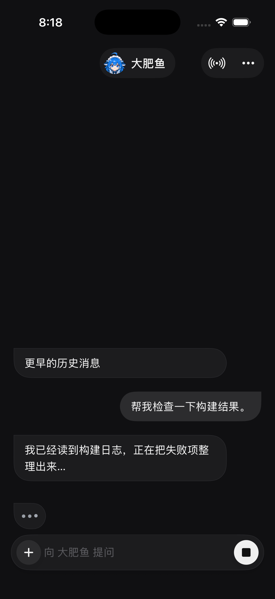

iOS 原生验收 · Bot
看得清，也切换得自然。
只保留简短真实进展。等待和回复，交给三个点。


16pt默认字号220ms轻量切换•••等待／回复单行 · 不可点击 · 输入框不跳动
等待与回复，不再显示占位文字。
等待回应
生成答复

另外检查了大字体和深色错误态。系统“减少动态效果”时使用静态呈现；原生 UI 测试覆盖了大字体和纯淡化切换偏好。


真实 DSH 模拟的完整状态清单
三个自然任务共 17 段非空显示：11 条任务进展＋6 段三点提示。11 条中，9 条来自主模型，2 条来自真实工具参数。以下保留原样文案。
① 检查 #174
- •••等待阶段
- 查看工作区与 pr 资料目录
- 读取 #174 的资料笔记
- 读取 main 侧的笔记
- •••回复阶段
② 总结周三例会
- •••等待阶段
- 先看工作区里 notes 资料有哪些
- 在读周三例会纪要原文
- 在读 actions 清单核对待办项
- •••回复阶段
③ 给李光浩写回复草稿
- •••等待阶段
- 查看 inbox 和 notes 目录内容
- 在读李光浩的来信内容
- 在读发布背景笔记
- 在写文件 · draft-reply-liguangh…工具参数
- 打开文档 · 给李光浩的回复草稿工具参数
- •••回复阶段
内容证据来自 DeepSeek V4.1 Flash / max 的真实 DSH 任务及生产投影回放。截图与视频是 iOS Simulator 的 UI 验收；未声称真机或生产验收。